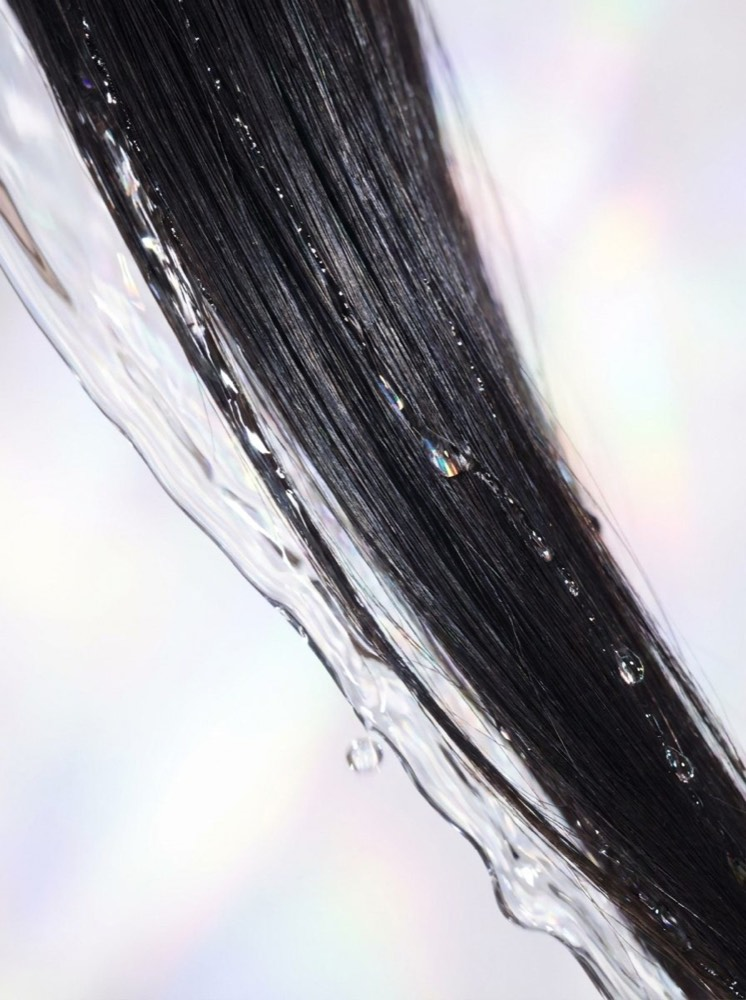

Journal
髪は ひとりひとり違うもの
悩みの理由を知り 自分の髪と やさしく付き合うための ちいさなヒントを

Featured · Mirai Soap
シャンプーを選ぶとき 私たちはずっと成分表ばかり見てきました
いちばん長く髪にふれているのは 実は水のほうです
Hair Finder
いくつかの質問に答えるだけで あなたの髪格と 今に合うケアの方向が見えてきます
髪格診断をはじめる →髪のことを もっと相談したい方は 全国のSEAM認定サロン へ